29 frames. Each one is a simple stand-in that can be swapped for a real drawing. The dashed box is
the frame's edge; the checkerboard is transparent.
To redraw one: same box shape (peeker 5:7, others square), transparent PNG,
4x size or more, same facing and framing as the stand-in (trace it). Save it next to the stand-in with the same
name (pole/walk_a.png) and list it in custom.js. Frames ending in _a/_b alternate
quickly, so draw them as a pair. Full rules: README.md.
peeker/ 6 frames, box 50 x 70
The peeking guy: hides behind a shank and peeks out. Only the part on the near side of the shank shows, so draw him whole, in the same pose and on the same side of the box as the stand-in.
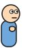
peeker/f0_sneak peekNwave
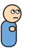
peeker/f1_peek_up peekNwavepeeker/f2_look peekNwavepeeker/f3_wave_a peekNwave (swaps with f4 every 0.2 s)peeker/f4_wave_b peekNwavepeeker/f5_blink peekNwave
pole/ 20 frames, box 70 x 70
The fireman guy: slides down a shank, lands or falls, walks, crawls, plucks a shank.
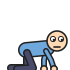
pole/crawl_a poleFall (swaps with crawl_b)
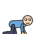
pole/crawl_b poleFallpole/crouch poleLand
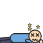
pole/dazed_a poleFall (cycles a-b-c)
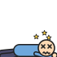
pole/dazed_b poleFallpole/dazed_c poleFallpole/fall_a poleFall (swaps with fall_b)pole/fall_b poleFallpole/hop poleLand
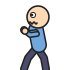
pole/pluck_pull shankPluck
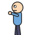
pole/pluck_reach shankPluck
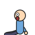
pole/pluck_sit shankPluck
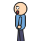
pole/pluck_watch shankPluck
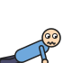
pole/pushup poleFallpole/slide_a poleLand, poleFall (swaps with slide_b every 0.09 s)pole/slide_b poleLand, poleFall
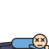
pole/splat poleFallpole/tada poleLand
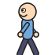
pole/walk_a poleLand, shankPluck (swaps with walk_b every 0.17 s; mirrored when walking the other way)
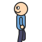
pole/walk_b poleLand, shankPluck
ski/ 3 frames, box 70 x 70
The skier: SkiFree-style slalom down the photo.
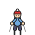
ski/ski_down skiFree
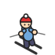
ski/ski_side skiFree (mirrored for the other direction)
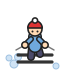
ski/ski_turn skiFree
Drawn by code for now
catComb: the sleeping cat, its fur, the comb's spine
pasta: the giant fork, the guy eating, his hand
galton: the pegs, beads and slots
fillUp: the water
sheetFall: nothing: the paper is the photo itself
light shows, shankShuffle, noodleDrop: nothing: they move the photo's own shanks